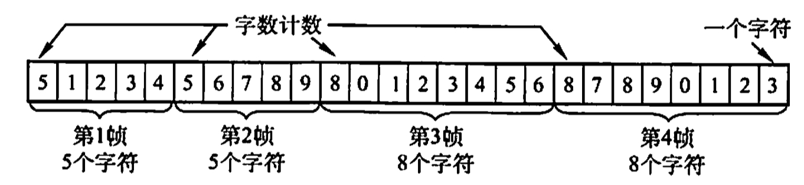
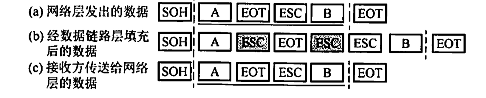
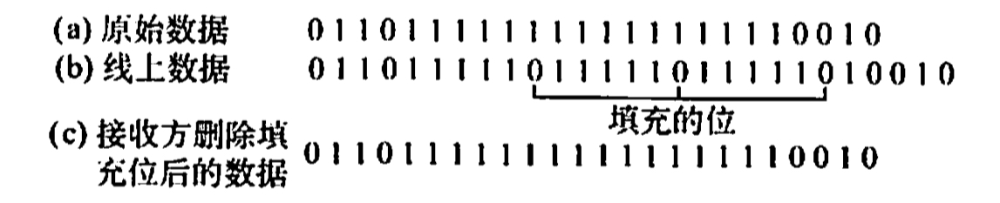

组帧
2022.2.1
[toc]
字符计数法
- 用于字符计数的字符也算入计数！！！
- 缺点，计数字段出错，帧会失去帧边界，收发端失去同步

字符填充的首尾定界符法
- 开始，SOH（Start of Head）
- 结束，EOT（End of Transformation）
- 转义，ESC（在前面加转义字符）
- 案例：PPP协议的异步传输模式(传字节)

零比特填充的首尾定界符法
- 开始结束：01111110
- 内容：五个1一个0
- 比符号填充更易由硬件实现，生活中常用
- 案例，DHLC协议，PPP协议的同步传输模式(传比特)

违规编码法
- 曼彻斯特编码，生活中常用
- 利用00与11判断首尾，01和10表示0与1
- 案例，局域网IEEE 802